1. Scope and purpose
This report separates two questions that must not be conflated: first, whether the two models were supplied with sufficiently comparable geometry, boundary conditions, forcing and output settings; and second, how their numerical results compare after that alignment. The figures were assembled from the current comparison package supplied for this report.
What was made consistent?
Horizontal domain, bathymetry source, upstream discharge, downstream water level, atmospheric forcing, comparison period, water-quality variable selection and plotting conventions.
What remains structurally different?
Native mesh representation, vertical discretisation, solver numerics, wetting/drying, diagnostic-variable implementation and some time stamps in the current figure set.
Which outputs are not yet reliable?
PAR, total light and GPP are zero throughout the SCHISM–AED run despite non-zero shortwave forcing; these diagnostics require interface/configuration investigation before scientific comparison.
2. Alignment audit: same, partially same, and different
The table below records the outcome of the step-by-step setup audit completed before interpreting output differences.
| Component | Status | What is aligned | What remains different / note |
|---|---|---|---|
| Horizontal domain | Aligned | SCHISM domain converted from the same Spoon Estuary TUFLOW mesh source and covers the same estuary footprint, including the island and downstream channel. | SCHISM stores 1,419 nodes and 1,375 polygonal faces; plotting triangulates the polygons into 2,535 triangles. Native connectivity and control-volume formulation therefore differ. |
| Bathymetry | Source aligned | Depths originate from the TUFLOW mesh/bathymetry used for the benchmark. | Cell-centre versus node/element interpolation and wet/dry handling can introduce local differences. |
| Open boundaries | Aligned | Ocean boundary uses the TUFLOW downstream water-level series; river boundary uses the TUFLOW upstream discharge series. SCHISM boundary-node ordering was explicitly checked. | Boundary enforcement differs numerically between solvers. |
| Boundary ramping | Aligned for case | The comparison case uses the no-ramp configuration to avoid an artificial start-up mismatch. | Initial transient response can still differ because the models initialise and stabilise differently. |
| Meteorological forcing | Aligned source | CFSR atmospheric forcing is applied over the same period. Downward shortwave radiation is present and non-zero. | Host-model-to-AED transfer pathways are not necessarily identical. |
| Simulation/output timing | Partially aligned | Common comparison window and hourly output were targeted. | The first saved SCHISM field is at 01:00 whereas a TUFLOW reference panel is labelled 00:00. Several supplied panels also use different timestamps; these must be matched before quantitative statistics. |
| Vertical representation | Different | Both represent the full water column and permit surface, near-bed and depth-averaged diagnostics. | SCHISM uses a 14-level SZ grid; TUFLOW uses its own layer-face formulation. “Top layer”, “bottom layer” and depth averaging are not numerically identical operations. |
| Water-quality state variables | Partially aligned | Core variables including oxygen, TN, TP, TSS and chlorophyll-a are available in both model systems and can be compared after consistent unit conversion and vertical treatment. | Variable names, native units, vertical representations and some diagnostic implementations differ between the TUFLOW FV–AED and SCHISM–AED host interfaces. |
| Light / primary production | Inactive in current SCHISM–AED run | Atmospheric shortwave forcing is present and non-zero, and light-related output was enabled. However, TOT_par, TOT_light and PHY_gpp remain zero throughout the simulation. | This is not currently attributed to missing input from the TUFLOW case. The evidence instead suggests that the solar-radiation transfer into AED, the SCHISM–AED light linkage, or the associated diagnostic/process configuration is inactive or unsupported and requires further investigation. |
| Transect geometry | Exact source used | Curtain comparisons use Matt’s original polyline.csv, not a hand-drawn centreline. The mapped SCHISM transect is about 13.64 km long. | Sampling requires mapping the polyline to the nearest SCHISM wet faces, so exact section cells still differ. |
3. Preliminary result comparison
The figures below reproduce the supplied comparison package. They are diagnostic rather than a final skill assessment. Captions distinguish direct comparisons from examples affected by unequal timestamps or non-functional diagnostics.
3.1 Water-surface elevation
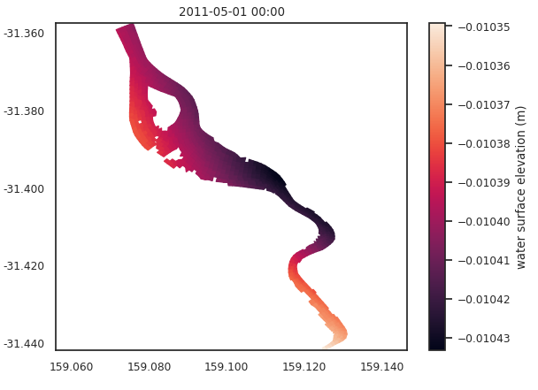
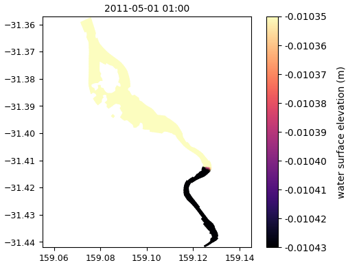
3.2 Dissolved oxygen
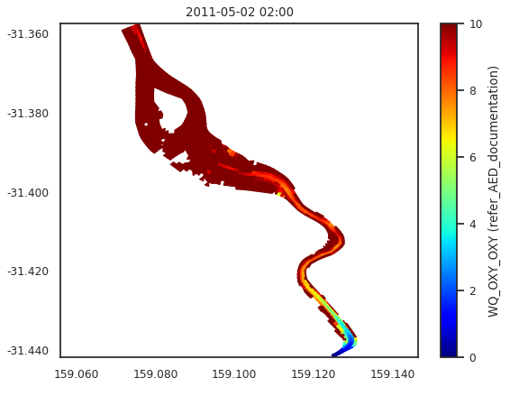
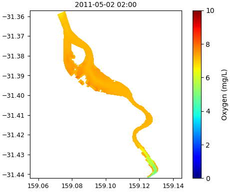
OXY_oxy was converted from mmol O₂ m⁻³ to mg O₂ L⁻¹ using ×0.032. The SCHISM field is approximately 4.8–7.9 mg/L and shows a similar downstream gradient, but lower contrast than the unconverted native field.3.3 Oxygen, total nitrogen and GPP
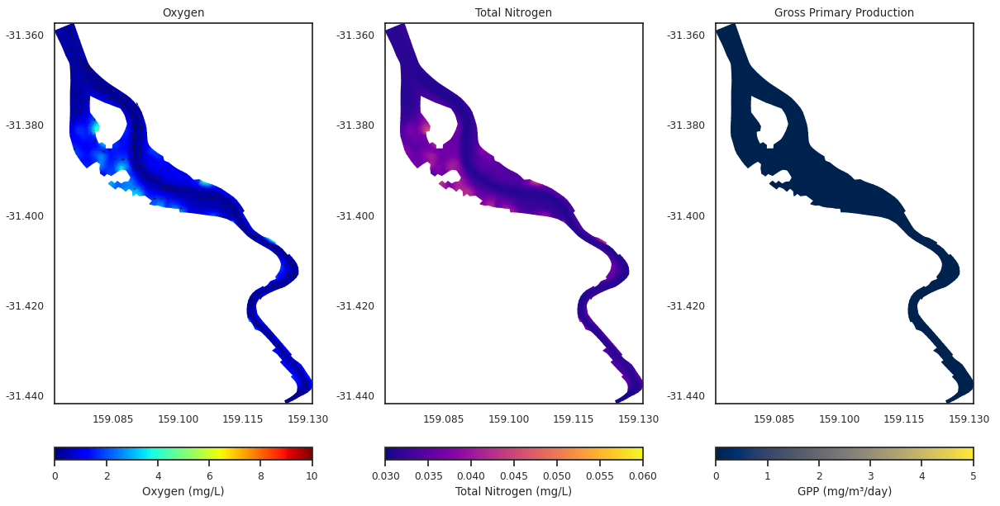
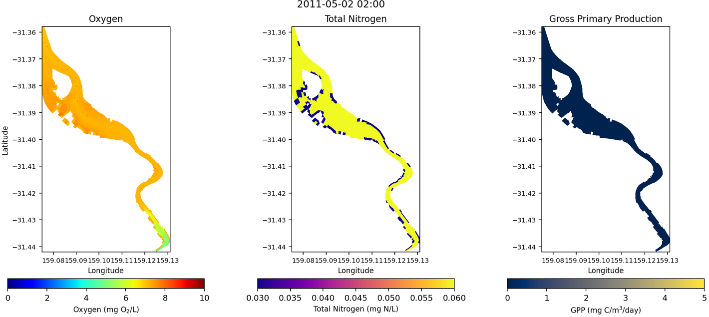
PHY_gpp is zero throughout the current run; it should not be interpreted as a real productivity result.3.4 Velocity, TSS and TP at three depth treatments
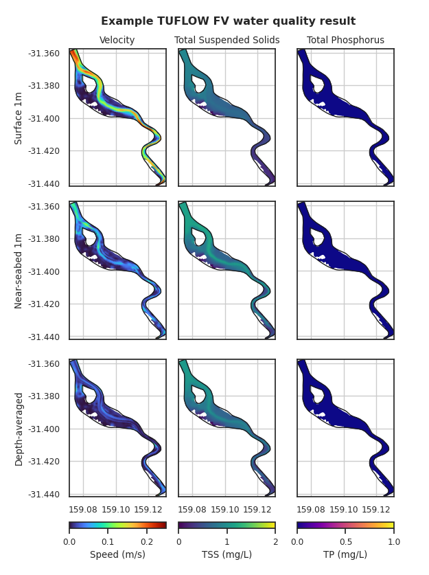
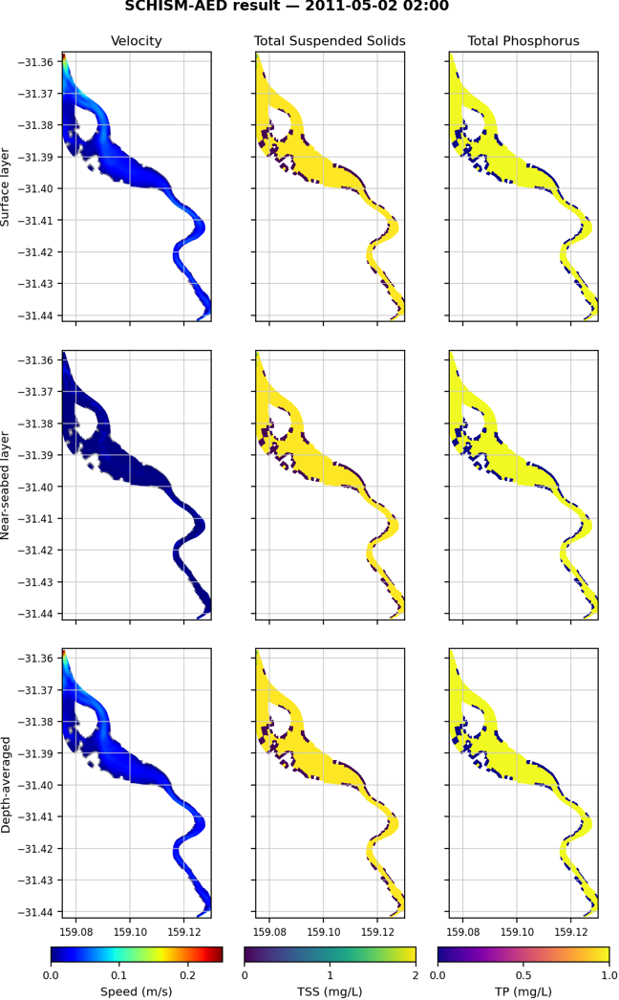
3.5 Point time series
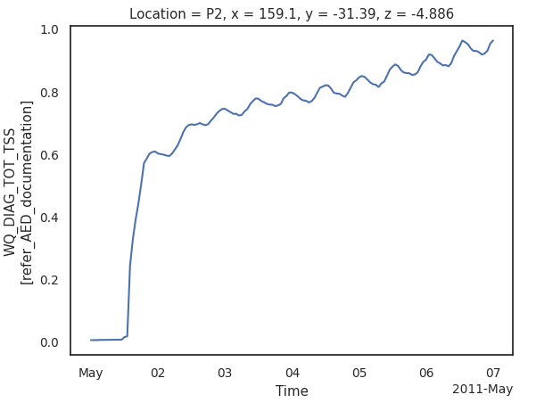
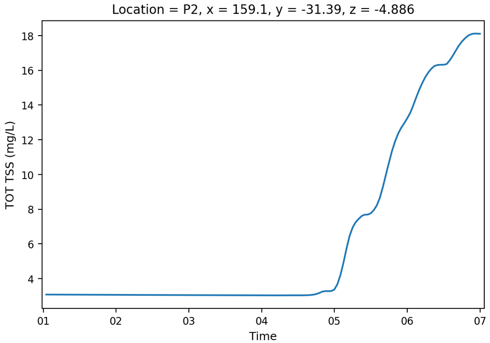
3.6 Oxygen map and curtain
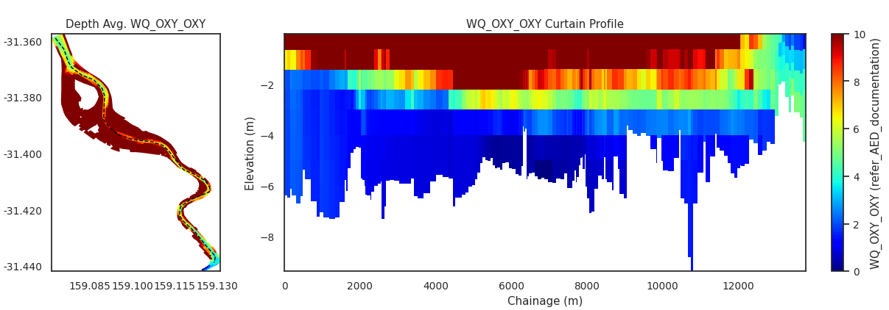
polyline.csv.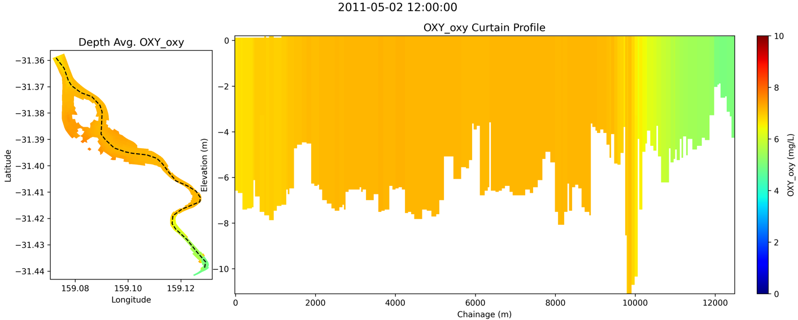
3.7 Density curtain
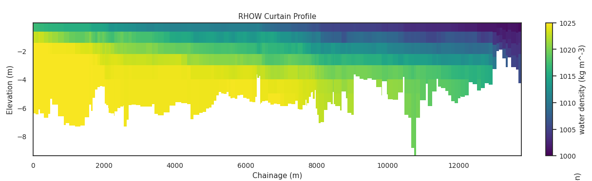
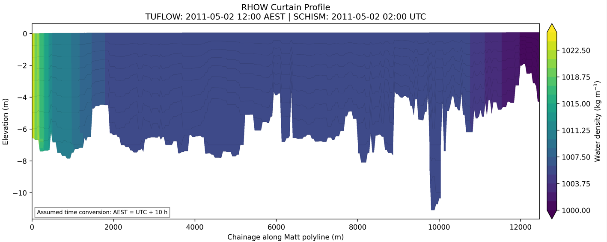
3.8 PAR and light-related diagnostics
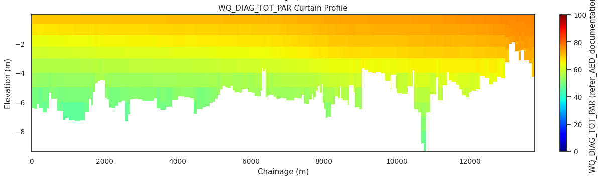
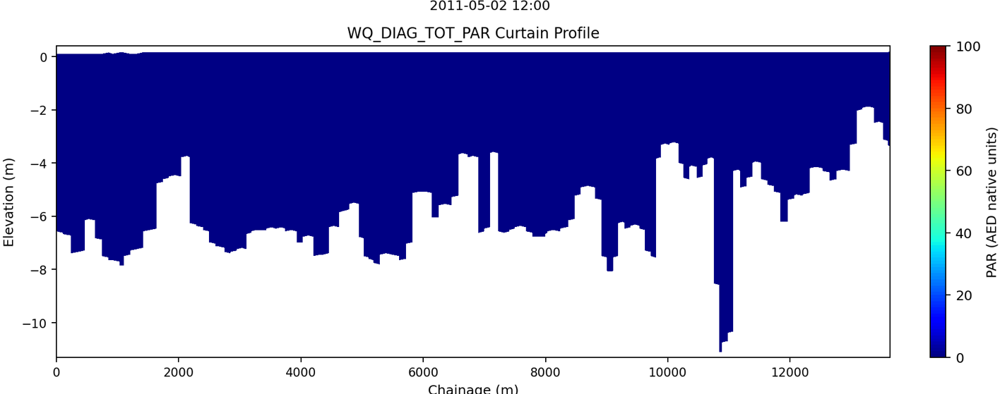
TOT_par is zero throughout the run. Together with zero TOT_light and PHY_gpp, this confirms that the current light/productivity pathway is not operational and the panel is a diagnostic failure, not a physical result.4. Current limitations and required checks
Match timestamps before any error metric
Several current panels compare 00:00 with 01:00, or use different dates. The next package should produce paired outputs from one shared list of exact timestamps.
Use one station definition
P1/P2 coordinates have varied across notebook examples. Store one authoritative station table and use the same horizontal face, vertical interpolation and depth convention in both models.
Resolve light transfer before GPP interpretation
Atmospheric dswrf is non-zero, yet TOT_par, TOT_light and PHY_gpp are identically zero. Investigate the SCHISM–AED host linkage, light input flags, diagnostic implementation and phytoplankton configuration.
Audit TN, TP and TSS composition
Correct molecular conversions do not guarantee that aggregated diagnostic definitions are identical. Confirm which dissolved, particulate, refractory and phytoplankton pools are included in each host’s TOT variables.
Quantify rather than rely on colour saturation
Produce common-grid difference maps, station RMSE/bias/correlation, vertical-profile errors and volume-integrated inventories using physically meaningful wet-cell masks.
5. Conclusions
Boundary and forcing alignment
The comparison case now uses the TUFLOW upstream discharge, downstream water level, common atmospheric source, no-ramp setup and exact curtain polyline. The two models are therefore substantially better aligned than the initial benchmark.
Hydrodynamic consistency
Domain-scale patterns are recognisably comparable, but density, velocity and first-output timing differences remain. A formal matched-time hydrodynamic validation is still required.
Biogeochemical consistency
Oxygen can be compared after unit conversion. TN, TP and TSS show large magnitude differences, while light and GPP diagnostics are non-functional in the current SCHISM–AED run.
6. Reproducibility and publishing
This page is intentionally self-contained in a new subdirectory. Uploading it will not modify or replace the existing GitHub Pages report.
spoon_estuary_github_report_readable directory.